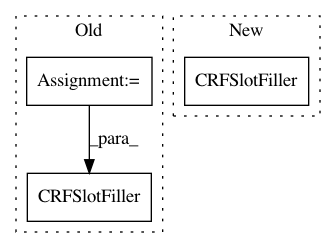

7e7a2b27edd81786fe3f6e4439c1ff5effcc6233,snips_nlu/intent_parser/probabilistic_intent_parser.py,ProbabilisticIntentParser,get_fitted_slot_filler,#ProbabilisticIntentParser#Any#Any#,88
Before Change
language = Language.from_iso_code(dataset[LANGUAGE])
crf_signatures = crf_features(dataset, intent, language,
self.config.crf_slot_filler_config)
slot_filler = CRFSlotFiller(crf_signatures,
self.config.crf_slot_filler_config)
return slot_filler.fit(dataset, intent)
def to_dict(self):
slot_fillers = None
After Change
self.slot_fillers[intent] = CRFSlotFiller.from_dict(slot_filler_data)
def get_fitted_slot_filler(self, dataset, intent):
slot_filler = CRFSlotFiller(self.config.crf_slot_filler_config)
return slot_filler.fit(dataset, intent)
def to_dict(self):
slot_fillers = None
In pattern: SUPERPATTERN
Frequency: 4
Non-data size: 3
Instances
Project Name: snipsco/snips-nlu
Commit Name: 7e7a2b27edd81786fe3f6e4439c1ff5effcc6233
Time: 2018-01-18
Author: adrien.ball@snips.net
File Name: snips_nlu/intent_parser/probabilistic_intent_parser.py
Class Name: ProbabilisticIntentParser
Method Name: get_fitted_slot_filler
Project Name: snipsco/snips-nlu
Commit Name: 64166241561ef4e968f4c2befdcefcd1de376292
Time: 2019-05-20
Author: clement.doumouro@gmail.com
File Name: snips_nlu/tests/test_crf_slot_filler.py
Class Name: TestCRFSlotFiller
Method Name: test_should_get_builtin_slots
Project Name: snipsco/snips-nlu
Commit Name: 64166241561ef4e968f4c2befdcefcd1de376292
Time: 2019-05-20
Author: clement.doumouro@gmail.com
File Name: snips_nlu/tests/test_crf_slot_filler.py
Class Name: TestCRFSlotFiller
Method Name: test_should_get_sub_builtin_slots
Project Name: snipsco/snips-nlu
Commit Name: 7e7a2b27edd81786fe3f6e4439c1ff5effcc6233
Time: 2018-01-18
Author: adrien.ball@snips.net
File Name: snips_nlu/intent_parser/probabilistic_intent_parser.py
Class Name: ProbabilisticIntentParser
Method Name: fit